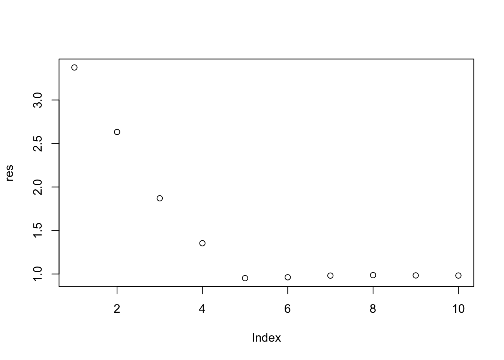

# Import data
dat_tr = read.table("BreastCancerTrain.txt", header = T, sep = ",")
dat_te = read.table("BreastCancerTest.txt", header = T, sep = ",")
dat_tr = dat_tr[,c(1,2,3,6)]
dat_te = dat_te[,c(1,2,3,6)]Solutions to Exercises in Lab 4
we implement and practice k-nearest neighbors method and subset selection methods with Breast cancer data and simulated data.
Task 1: About KNN and Cross Validation
In this task, we apply K-nearest neighbor method to Breast cancer data. We use variables radius, texture and smoothness to predict the target variable diagnosis.
Import data
Task 1.1: Practice KNN method
Read the help document of the function knn in library class first. This exercise aims to analyze how the choice of \(k\) affects the KNN method’s performance on training and test datasets and identify any patterns in overfitting or underfitting as \(k\) varies. Follow the instructions below to complete your experiment, and then draw your conclusions based on the experimental results.
Solutions:
Step 1:
K = seq(1,300,2)
num_k = length(K)
res_tr = res_te = numeric(num_k)Step 2:
library(class)
for(i in 1:num_k){
y_tr_pre = knn(dat_tr[,-1], dat_tr[,-1], dat_tr[,1], K[i])
res_tr[i] = mean(y_tr_pre == dat_tr[,1])
y_te_pre = knn(dat_tr[,-1], dat_te[,-1], dat_tr[,1], K[i])
res_te[i] =mean(y_te_pre == dat_te[,1])
}Step 3:
plot(1:num_k, res_tr, type = "b", col = "red", pch = 20, cex = 0.5,
ylab = "Accuracy", xlab = "k", ylim = range(c(res_tr, res_te)))
points(1:num_k, res_te, type = "b", col = "blue", pch = 20, cex = 0.5)Task 1.2: Practice LOOCV
Read the help document of the function knn.cv in library class first. Apply LOOCV to select the best hyper-parameter \(k\) and test the model performance in the testing set.
Tips: You can apply function knn.cv to perform LOOCV to select the best hyper-parameter. The suggested instruction:
Step 1:
# define all the candidate values
K = seq(1,300,2)
num_k = length(K)
# creat a vector 'cv_acc' to save all the cross validation results for all candidate models
cv_acc = numeric(num_k) Step 2:
for(i in 1:num_k){
# loop over all candidate models
y_pre = knn.cv(train = dat_tr[,-1], cl = dat_tr[,1], k = K[i]) # get the prediction by leave one out cross validation
cv_acc[i] = mean(dat_tr[,1] == y_pre) # calculate the cv accuracy for the ith candidate model
}
plot(1:num_k, cv_acc, type="b", pch = 20, cex = 0.5, xlab = "k")Step 3:
opt_k = which(cv_acc==max(cv_acc)) # find the optimal K
K[opt_k][1] 27# Estimate the model performance with testing data
y_pre = knn(train = dat_tr[,-1], test = dat_te[,-1], cl = dat_tr[,1], k = K[opt_k])
mean(dat_te[,1] == y_pre)[1] 0.877193Task 1.3: Practice 5-fold Cross Validation
Tune the hyper-parameter by 5-fold cross validation. Estimate the model performance of the optimal model with testing set.
Note: Function knn.cv only provide LOOCV option. So, you need to implement the 5-fold CV by your own code.
Solutions:
K = seq(1,300,2)
num_k = length(K)
set.seed(8312)
cv_k_acc = numeric(num_k)
ID = matrix(sample(1:445), nrow = 5) # randomly split the sample into k folds
# each row of 'ID' contains all the id of observations in the corresponding fold Solutions: Since each row in ID contains the index of one fold, we can write a for loop to implement 5-fold validation.
for(i in 1:num_k){
temp_res = numeric(5)
for(j in 1:5){
y_pre = knn(train = dat_tr[-ID[j,],-1], # pick up the feature variables of observations not in the jth fold
test = dat_tr[ID[j,],-1], # predict on the observations in the jth fold
cl = dat_tr[-ID[j,],1], # target variable of observations not in the jth fold
k = K[i])
temp_res[j] = mean(y_pre == dat_tr[ID[j,],1]) # accuracy of the current model for the jth fold
}
cv_k_acc[i] = mean(temp_res) # overall cv accuracy for the jth fold
}
plot(1:num_k, cv_k_acc, type="b", pch = 20, cex = 0.5)Solutions: Find the optimal model selected by 5-fold CV and estimate the model performance.
opt_k = which(cv_k_acc==max(cv_k_acc)) # find the optimal K
K[opt_k][1] 17# Estimate the model performance with testing data
y_pre = knn(train = dat_tr[,-1], test = dat_te[,-1], cl = dat_tr[,1], k = K[opt_k])
mean(dat_te[,1] == y_pre)[1] 0.8684211Task 2: About Feature Selection
In this task, we will use simulated data to practice feature selection methods. The simulated data can be generated using the following R code. From the code, we can see that the target variable is primarily determined by the first five feature variables. Below, we randomly display the first six observations of five feature variables and the target variable \(y\).
set.seed(8312)
n = 500
p = 20
X = matrix(rnorm(n * p), nrow = n, ncol = p)
w = c(2, -3, 1, 2.3, 1.5, rep(0, p-5))
y = X %*% w + rnorm(n, mean = 0, sd = 1)
dat = data.frame(X, y = y)
rm( X, w, y)
head(dat[, c(sort(sample(1:20, 5)), 21)]) X7 X8 X13 X14 X18 y
1 -0.4051647 0.04860872 0.03389675 -2.51265909 -0.7737131 2.683957
2 -0.3300477 -1.19580506 -1.48307329 -0.24639241 -0.7631660 -2.255025
3 0.8251963 0.33617031 -0.22148474 0.27703785 -0.4178979 -7.106195
4 -0.8314352 1.32395677 1.20709742 1.84552276 -0.8829887 2.433349
5 -0.5919659 -0.06201140 0.15292587 0.28684091 -1.6195710 -1.023411
6 -2.0953279 -1.45533806 -0.50448883 0.06009562 0.4953250 -2.891946Task 2.1: Practive leaps package
Read the help document of function regsubsets. Apply this function to do best subset selection on the simulated data, dat. Print out the names of variable selected in the candidate model with 8 feature variables and their model coefficients.
Tips: Two options to get the regression coefficients:
- You can find the included variables of the candidate model with 8 feature variables by the following code.
summary(m)$which # m: the output of `regsubsets`- Use function
coefto extract the selected variables. You need to specify two arguments, the output ofregsubsetsfunction and the id of target candidate model.
library(leaps)
m1 = regsubsets(y~., dat, nvmax = 10) # if you want to do forward/backward selection, then you need to add 'method' in the function
# summary(m1) summary(m1)$which (Intercept) X1 X2 X3 X4 X5 X6 X7 X8 X9 X10 X11
1 TRUE FALSE TRUE FALSE FALSE FALSE FALSE FALSE FALSE FALSE FALSE FALSE
2 TRUE FALSE TRUE FALSE TRUE FALSE FALSE FALSE FALSE FALSE FALSE FALSE
3 TRUE TRUE TRUE FALSE TRUE FALSE FALSE FALSE FALSE FALSE FALSE FALSE
4 TRUE TRUE TRUE FALSE TRUE TRUE FALSE FALSE FALSE FALSE FALSE FALSE
5 TRUE TRUE TRUE TRUE TRUE TRUE FALSE FALSE FALSE FALSE FALSE FALSE
6 TRUE TRUE TRUE TRUE TRUE TRUE FALSE FALSE FALSE FALSE FALSE FALSE
7 TRUE TRUE TRUE TRUE TRUE TRUE FALSE FALSE FALSE FALSE FALSE FALSE
8 TRUE TRUE TRUE TRUE TRUE TRUE FALSE FALSE FALSE FALSE FALSE FALSE
9 TRUE TRUE TRUE TRUE TRUE TRUE FALSE FALSE FALSE FALSE FALSE FALSE
10 TRUE TRUE TRUE TRUE TRUE TRUE TRUE FALSE FALSE FALSE FALSE FALSE
X12 X13 X14 X15 X16 X17 X18 X19 X20
1 FALSE FALSE FALSE FALSE FALSE FALSE FALSE FALSE FALSE
2 FALSE FALSE FALSE FALSE FALSE FALSE FALSE FALSE FALSE
3 FALSE FALSE FALSE FALSE FALSE FALSE FALSE FALSE FALSE
4 FALSE FALSE FALSE FALSE FALSE FALSE FALSE FALSE FALSE
5 FALSE FALSE FALSE FALSE FALSE FALSE FALSE FALSE FALSE
6 FALSE FALSE FALSE FALSE FALSE FALSE TRUE FALSE FALSE
7 TRUE FALSE FALSE FALSE FALSE FALSE TRUE FALSE FALSE
8 TRUE FALSE FALSE FALSE FALSE FALSE TRUE TRUE FALSE
9 TRUE FALSE FALSE FALSE TRUE FALSE TRUE TRUE FALSE
10 TRUE FALSE FALSE FALSE TRUE FALSE TRUE TRUE FALSE# solution 1
res = summary(m1)$which[8,-1]
temp_dat = dat[, res]
temp_dat$y = dat$y
m_temp = lm( y~., temp_dat )
m_temp$coefficients(Intercept) X1 X2 X3 X4 X5
-0.04070300 1.98697488 -3.11149188 0.96235490 2.34621090 1.42697443
X12 X18 X19
0.06994639 -0.08102189 0.05768604 # solution 2
coef(m1, id=8) # find all the variables and coefficients in the optimal model with 8 features (Intercept) X1 X2 X3 X4 X5
-0.04070300 1.98697488 -3.11149188 0.96235490 2.34621090 1.42697443
X12 X18 X19
0.06994639 -0.08102189 0.05768604 Task 2.2: Prediction with candidate models
Set random seed as 2024. Randomly split the data set into training and testing sets (80% VS 20%). Use the same method as task 2.1 to find all the candidate models. Apply the candidate model with 8 feature variables to the testing set and estimate the RMSE.
Tips: Function model.matrix can be used for preparing the data matrix for prediction, e.g.,
x_test = model.matrix(y~., dat_te)set.seed(2024)
id = sample(1:dim(dat)[1], dim(dat)[1]*0.8)
dat_tr = dat[id,]
dat_te = dat[-id,]
m1 = regsubsets(y~., dat_tr, nvmax = 10)
x_test = model.matrix(y~., dat_te) # function for preparing prediction matrix for the testing set
coe = coef(m1, id = 7)
pred = x_test[, names(coe)]%*%coe # prediction. you also can implement this step by for loop
rmse = sqrt(mean((dat_te$y - pred)^2))
rmse[1] 1.205906Task 2.3: Select the final optimal model
With the same data spiting, find the optimal model by training-against-validation method. Estimate the model performance with the testing set.
id_train = sample(id, length(id)*0.8)
dat_training = dat_tr[id_train, ]
dat_validating = dat_tr[-id_train, ] # further split training set as training and validation set
# find the best model
m1 = regsubsets(y~., dat_training, nvmax = 10)
x_val = model.matrix(y~., dat_validating)
res = numeric(10)
for(i in 1:10){
coe = coef(m1, id = i)
pred = x_val[, names(coe)]%*%coe
res[i] = sqrt(mean((dat_validating$y - pred)^2))
}
plot(res)
# we choose the model with 10 feature variables
# train the model with 10 feature variables and evaluate the model performance with the testing set.
opt = which(res == min(res))
opt[1] 5coef(m1, id = opt)(Intercept) X1 X2 X3 X4 X5
-0.07504814 1.91831167 -3.13194720 0.92864807 2.31970426 1.44105002 res = summary(m1)$which[8,-1]
temp_dat = dat_tr[, res]
temp_dat$y = dat_tr$y
final_m = lm(y~., data = temp_dat)
pred = predict(final_m, dat_te)
mean((dat_te$y - pred)^2) # it the estimate model performance[1] 1.433956Task 2.4 (optinal): Practice glmnet package
Read the help document of cv.glmnet function in package glmnet first. Apply LASSO method to select the feature variables in dataset dat.
Note: If you are short on time, you can skip this task for now. We will focus on practicing this package in the lab next week.
Solutions:
library(glmnet)Loading required package: MatrixLoaded glmnet 4.1-8set.seed(2024)
model = cv.glmnet( x = as.matrix(dat_tr[,-21]), y = dat_tr[,21],
nfolds = 10, alpha = 1, type.measure = "mse")
plot(model)This figure illustrates the cross-validation results. The x-axis represents the logarithm of the penalty parameter, the y-axis shows the cross-validation MSE, and the top of the image indicates the number of variables included in the corresponding model. The first dashed line marks the model with the smallest cross-validation MSE, while the second dashed line indicates the model whose performance is within one standard deviation of the minimum MSE. In other words, the performance of the model marked by the second dashed line is very close to that of the model with the minimum MSE. However, in practice, we tend to prefer simpler models, which is why the model marked by the second dashed line is often selected.
model$lambda.min[1] 0.03378175model$lambda.1se[1] 0.1363775which(coef(model, s = "lambda.min")!=0) [1] 1 2 3 4 5 6 7 8 9 10 13 16 17 18 19 20which(coef(model, s = "lambda.1se")!=0)[1] 1 2 3 4 5 6Above, the values of the penalty parameter and the corresponding indices of the selected variables for both the mse-min and mse-1se models are displayed.